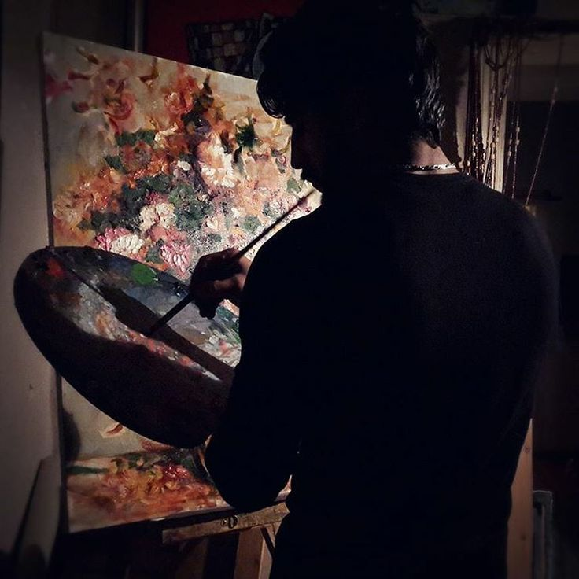
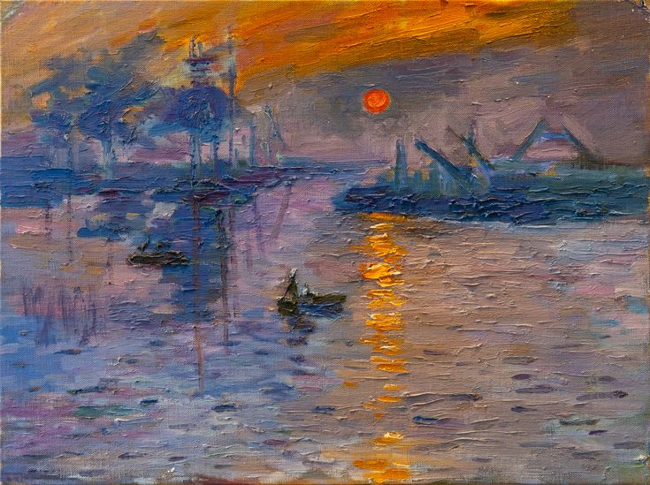
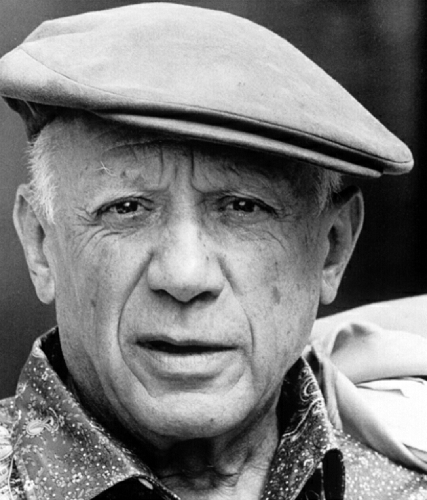

O Dia do Pintor é celebrado no Brasil em 18 de outubro para homenagear os artistas da pintura e os profissionais da construção civil e decoração. A escolha da data remete ao dia de São Lucas, considerado pela tradição cristã o padroeiro dos pintores e dos artistas por ter sido um talentoso desenhista e retratista de sua época. Essa comemoração reconhece tanto o talento criativo que transforma sentimentos e paisagens em telas quanto o trabalho técnico que traz cor, proteção e vida aos espaços do cotidiano.

A obra Sunsi (também conhecida como Sünsi, datada de 1883), criada pelo pintor impressionista alemão Max Liebermann, é um marco da transição do Impressionismo na Europa Central ao capturar a simplicidade e a atmosfera espontânea da vida cotidiana rural. Na tela, o artista retrata uma jovem camponesa sob a luz suave do sol que atravessa a vegetação, utilizando pinceladas livres, textura densa e uma paleta de cores naturais que priorizam os efeitos luminosos do momento em vez de contornos rígidos.

Pablo Picasso (1881–1973) foi um dos maiores pintores e escultores do século XX, famoso por revolucionar a arte ocidental ao romper com a representação tradicional da realidade. O mestre espanhol cofundou o Cubismo, um movimento vanguardista que fragmentava objetos e figuras para exibi-los sob múltiplos ângulos simultaneamente na mesma tela, além de transitar por diversas fases marcantes em sua carreira, como a Fase Azul e a Fase Rosa. Sua obra icônica Guernica permanece até hoje como um dos mais potentes símbolos artísticos contra os horrores da guerra e da violência.
A História da Arte registra a evolução da expressão humana desde as primeiras manifestações nas paredes das cavernas na Pré-História, passando pelas grandes civilizações da Antiguidade — como o Egito e a Grécia —, até o esplendor do Renascimento na Europa, que resgatou o humanismo e a perspectiva geométrica. Ao longo dos séculos seguintes, estilos como o Barroco e o Neoclassicismo moldaram a estética ocidental, alternando entre o drama emocional, a ornamentação e o rigor clássico.
Com a chegada da Revolução Industrial no século XIX, a arte passou por uma transformação radical: os artistas abandonaram a reprodução fiel da realidade e deram origem às vanguardas modernas, como o Impressionismo, o Cubismo e o Surrealismo. Na arte contemporânea, as fronteiras se expandiram ainda mais, integrando novas mídias, instalações e abordagens conceituais que questionam o próprio papel da sociedade e da cultura.
Além das tradições ocidentais, a jornada artística global é enriquecida pelas profundas contribuições das culturas orientais, africanas e pré-colombianas. Das delicadas gravuras em madeira do Japão aos complexos padrões da caligrafia e arquitetura islâmica, passando pelas esculturas rituais africanas que inspiraram os modernistas europeus, a arte sempre funcionou como uma linguagem universal para registrar a cosmologia, a espiritualidade e os mitos de diferentes povos.
Hoje, a História da Arte não apenas documenta estilos e técnicas, mas também reflete as complexas interações entre cultura, política e identidade, oferecendo uma lente crítica para compreender o passado e inspirar o futuro da expressão artística.
| Lista | Nome | Tipo de Pintor | Obra | Data de Nascimento |
|---|---|---|---|---|
| 1 | Leonardo da Vinci | Artista Plástico | Mona Lisa | 15 de abril de 1452 |
| 2 | Banksy | Grafiteiro | Menina com Balão | 28 de julho de 1974 |
| 3 | Oscar Niemeyer | Arquiteto | Catedral Metropolitana de Brasília | 15 de dezembro de 1907 |
O pintor com seu pincel
não sabe que tinta é essa
que sai direto do coração
e vai pintando terra e céu.
Pinta mares e montanhas,
o homem e seus mistérios,
o amor com seus novelos,
encruzilhadas e girassóis.